剪纸是训练孩子动手能力、空间想象能力的一个很好的方式。本讲的图形展开题目就是从剪纸衍生出来的。由于剪纸过程中，要把纸折叠后再展开，我们也把这样的题型归到图形展开的范畴。对于这一类题型，家长可以在平时多让孩子尝试，去剪剪看，观察剪完后展开的效果。
通过这一类展开图的训练，孩子可以增强动手能力，对空间图形的认知能力，特别是对对称图形的特征的认知能力。
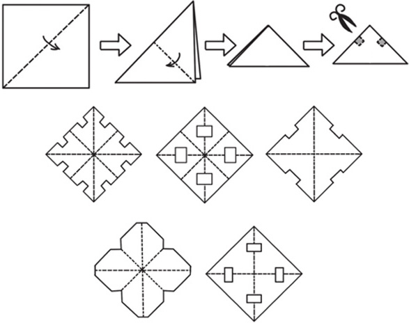
典型例题 1 将一张圆形纸片按照下图对折3次，用剪刀沿着虚线剪掉其中的一部分，那么剩下的部分展开后是什么效果？
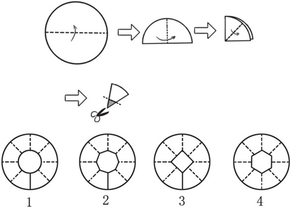
圆形相当于对折了3次，因此按照图示的方法剪了一刀后，剪掉的部分应该有8条边，应该是一个八边形，所以正确的展开图形应该是2。
典型例题 2 将正方形按照下图对折2次，然后用剪刀沿虚线剪开。剩下的部分展开之后会是什么效果？
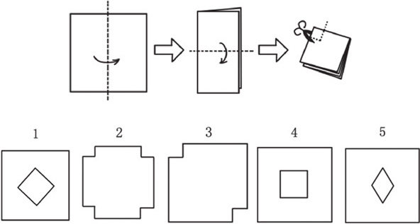
从图中虚线的位置可以看出来，剪掉的部分不应该在边上，所以首先排除图2、图3；虚线与边是平行的，所以图1、图5排除；只有图4满足要求。
1.将一张圆形纸片按照下图对折2次，用剪刀沿着虚线剪掉其中的一部分，那么剩下的部分展开后是什么效果？
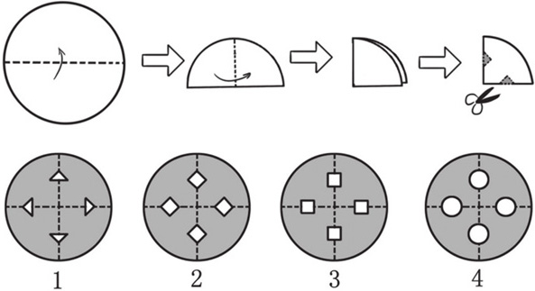
2.将一张圆形纸片按照下图对折2次，用剪刀沿着虚线剪掉其中的一部分，那么剩下的部分展开后是什么效果？
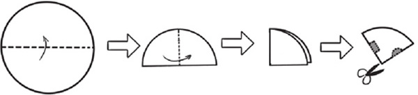
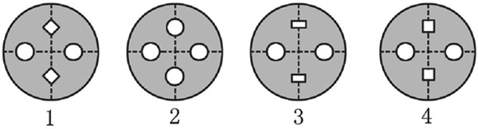
3.将一张圆形纸片按照下图对折3次，用剪刀沿着虚线剪掉其中的一部分，那么剩下的部分展开后是什么效果？
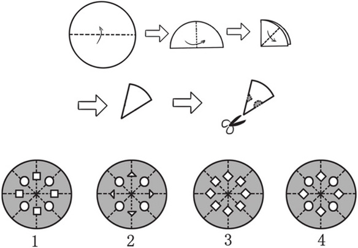
4.将正方形按照下图对折2次，然后用剪刀沿虚线剪开。剩下的部分展开之后会是什么效果？
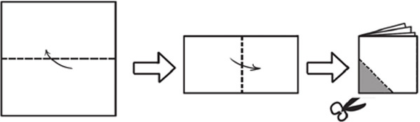
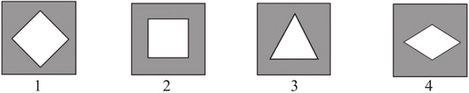
5.将正方形按照下图对折3次，然后用剪刀沿虚线剪掉阴影部分。剩下的部分展开之后会是什么效果？
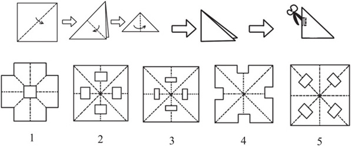
6.将正方形按照下图对折3次，然后用剪刀沿虚线剪掉阴影部分。剩下的部分展开之后会是什么效果？
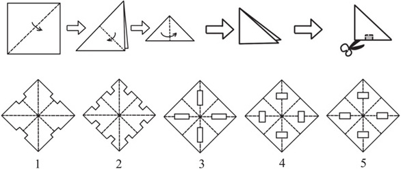
7.将正方形按照下图对折2次，然后用剪刀沿虚线剪掉阴影部分。剩下的部分展开之后会是什么效果？
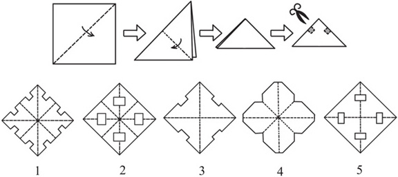
8.一个正方形如果用剪刀剪一次，在正方形中间剪出一个小正方形来，怎么剪？
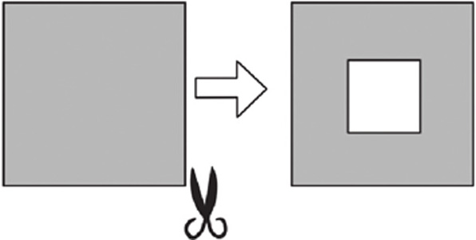
9.把一张圆形纸对折2次，然后用剪刀剪掉阴影部分。剩下的部分展开之后会是什么效果？
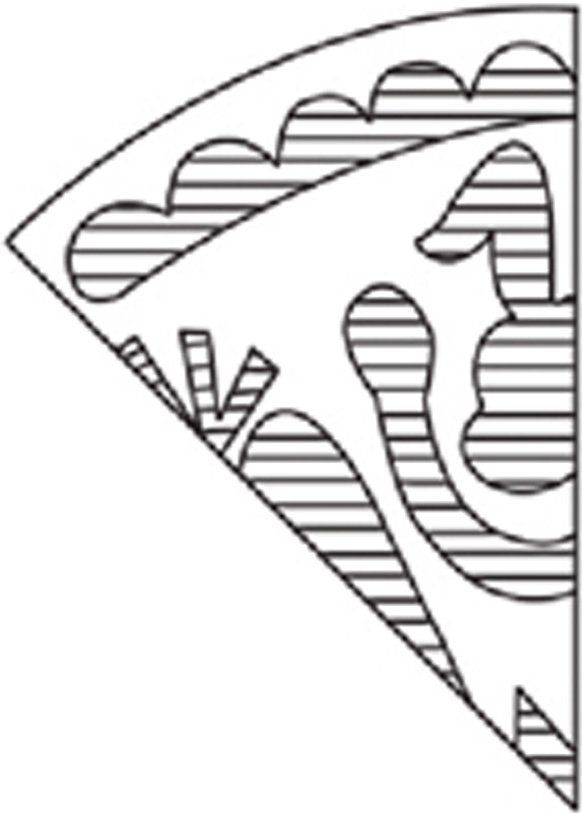
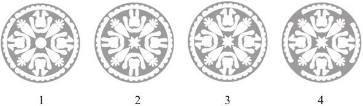